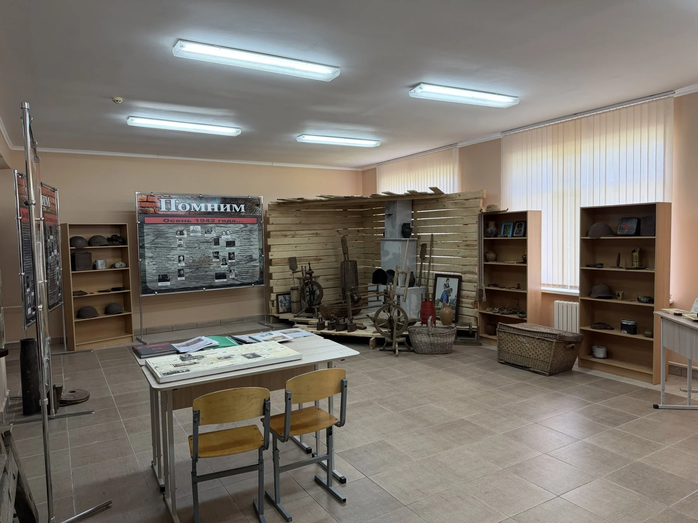
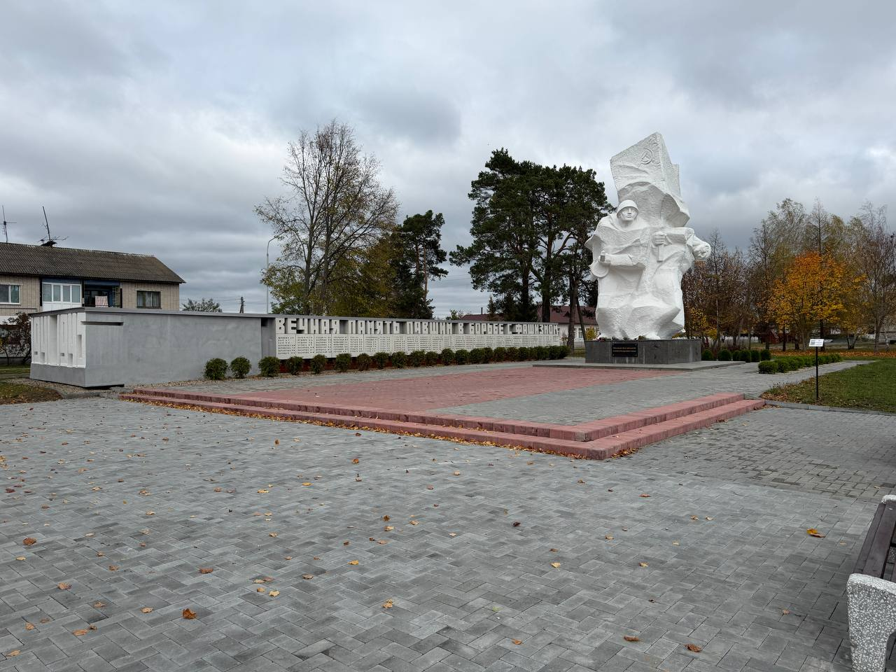

3D-прогулкаШкольный музей
Познакомьтесь с экспозицией, рассмотрите предметы быта и стенд «Помним».
Начать исследованиеНачните со школьного музея. Продолжите у памятника Богданчуку и завершите путь у памятника землякам.

3D-прогулкаПознакомьтесь с экспозицией, рассмотрите предметы быта и стенд «Помним».
Начать исследование Прогулка вокруг
Прогулка вокруг
Прогулка по площадиРассмотрите скульптуру и имена на стене памяти.
Осмотреть местоКак музей и памятники сохраняют память о Мухавце? Соберите три наблюдения, найдите подтверждения и сформулируйте собственный вывод.
0/3 наблюденийДневник можно скачать и использовать при подготовке защиты проекта.
Найдите деталь в каждой прогулке.
Сопоставьте её с оригинальным фото, надписью или видеорассказом.
Запишите вывод и вопросы, которые ещё предстоит исследовать.